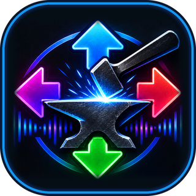

Turns any song into StepMania dance charts: Easy, Medium and Hard.
Windows and Mac. Free and open source (MIT).
Move a slider and watch the arrows change against the default, with the song playing a tick on every step.
Open the previewEach slider and setting, with pictures of the arrows at 25%, 50% and 75% and what the dial test measured.
Read the guideInstall the app, or run it from source, point it at your songs and play them in StepMania, ITGmania or OutFox.
Get going